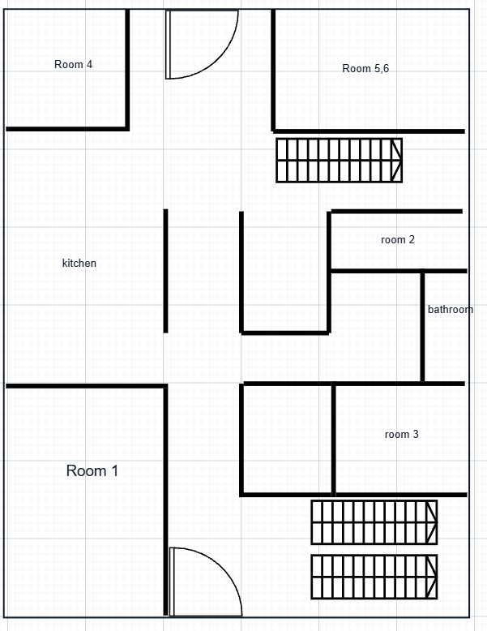
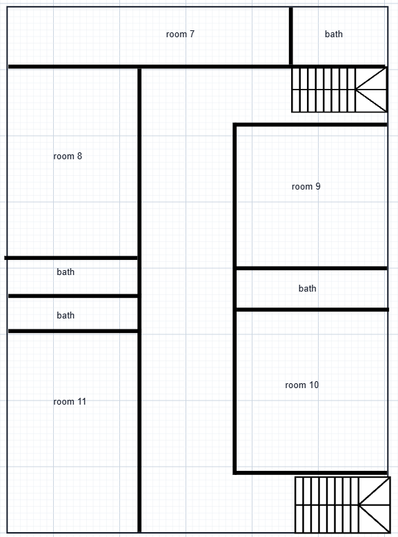

HW2 · Map
Every way between floors is a staircase
Ground floor, second floor, basement
The house has three staircases and no step-free route. Once my back was hurt, the smaller things mattered more: a heavy front door, a missing address, and which rooms come with a bathroom.
Hand-drawn maps
My first sketches of each floor, then the cleaner plans I drew on a grid. Everything labeled below comes from these.




Ground floor and basement, labeled
Second floor, labeled
User flows
| Flow | Steps | Hardest point |
|---|---|---|
| Coming home to room 11 | Motion light comes on, push the front door, hallway, stair A or C, 2F hallway, my room | The front door. The closer pushes back the whole way. |
| A visitor or delivery | Arrive at the front, look for a number, walk around to the back, find the paper address by the mailbox | No address at the front. No way to know it's the right house. |
| Rooms 1 to 6 need a toilet | Leave the room, hallway, shared WC between rooms 2 and 3, wait if it's taken | One toilet for six rooms. |
| Going to campus at night | Front door again, motion light, dark street, 15+ minute walk | The street. Dark past the doorstep, and my back hurts more the longer I walk. |
Photos


Things I couldn't photograph because they aren't there: a house number at the front, a step-free way between floors, streetlights on my block.
HW2 · Reflection
The door was harder than the stairs
Space, method, findings
The space
For HW1 I planned to map Folsom Library, West Hall, and the Rensselaer Union with my group. The week of the workshop I hurt my back, and the walk to campus, more than 15 minutes from my house, started to hurt too much. I mapped my own house instead and did it alone. It's a shared house with a ground floor, a basement, and a second floor. Rooms 1 to 6 are downstairs and 7 to 11 are upstairs. Mine is 11.
In HW1 I wrote that I was interested in what a space is like when something is temporarily out of order. I didn't expect that to be my back.
What I started with
I reused my HW1 guiding questions as criteria. Can you find the entrance and tell you're at the right place without asking? How do you get between floors, and is there anything besides stairs? Where are the restrooms and who can use them? Who is the space built around, and what unwritten rules does it have? I walked the routes I take every day (front door to my room, room to bathroom, ground floor to basement), took photos, and wrote down what each spot made me do with my body: push, pull, grip, climb, or stop.
Evidence
I counted what I could count: staircases, handrails, restrooms, doors with closers. I used my back as a second measure and noted where it hurt and where I had to stop. I also looked for information the building gives you, like an address or signs. Overall I'd rate the house medium. You can't get between floors without stairs, but every staircase has a handrail on both sides, and that's what let me keep using them.
What I found
The front door. It has an overhead closer, a keypad lock, and a handwritten sign that says "Please lock & shut door nice + tight." The closer makes it heavy, and pushing it open was the one movement that hurt every time. The sign shows the house expects everyone to pull it shut hard.
The address. You can't find it from the front. It's written on a sheet of paper at the back door, where the mail comes in. A visitor or delivery driver at the front has no way to check they have the right house, and neither would an ambulance crew.
The stairs. Right of the front entrance, stair A goes up and stair B goes down to the basement. If you walk straight down the hallway, stair C is on the right and also goes up, ending by room 7. The treads are worn and the paint is peeling. At the top of stair A someone patched a gap in the railing with a piece of plywood. There's a metal chair at the top of stair C. I don't know why it's there, but I sat on it more than once after climbing.
The restrooms. On the ground floor, rooms 1 to 6 share one all-gender restroom between rooms 2 and 3. Upstairs, rooms 7, 8, and 11 have private bathrooms, and rooms 9 and 10 share one. Whether you walk down a hallway to use the toilet depends on which room you rent. I have my own, and it made the injury a lot easier to live with.
Outside. A motion sensor light comes on over the front door at night, which helps at the door and nowhere else. The street is dark and I don't like walking it alone. With the distance and my back, getting to campus came down to the time of day and whether someone was with me.
Surprises and frustrations
I expected the stairs to be the problem, and because of the handrails they weren't. The door was. The door closer is the thing I passed every day and never noticed. The accessibility feature I use that isn't meant for me is the second handrail: I used to hold one side, and now I hold both. The frustrating part was missing the group workshop. Once getting to campus got hard, taking part in class did too.
Where resources collect
Even inside one house the resources cluster. Private bathrooms come with certain rooms, which probably cost more, so some of the access here is paid for in rent. Campus works the same way on a bigger scale. Students who live farther away, often because it's cheaper, spend more time and effort getting to class, and if their body changes, the distance can cut them off. No building accessibility checklist counts that.
If I could redesign it
I'd start small: adjust or replace the door closer so it takes less force, put a house number at the front, and replace the plywood with a real railing. Outside, I'd add lighting along the route to campus and find out whether any shuttle or safe-ride service reaches houses this far out.
HW2 · Appendix
Field notes
Criteria carried over from HW1
Criteria
- Entrances clearly marked and findable without asking
- Moving between floors: stairs or alternatives, and who uses which
- Restrooms: how many, shared or private, all-gender, where
- Who the space is designed around and who works around it
- Unwritten rules and how a newcomer would learn them
Notes
- Back injury, couldn't go to the group workshop or walk to campus. Mapped my house. Worked alone.
- Accessibility overall: medium. Stairs only, but handrails on both sides.
- Enter front door, turn right: stairs up to 2F and stairs down to the basement. Go straight in, then right: second staircase up to 2F.
- Worn treads, peeling paint, plywood on one railing.
- Chair at the top of stair C by room 7. Used it to rest.
- No sign at the front. Address only on paper at the back door where mail comes in.
- Front door heavy: overhead closer, keypad, lever handle, handwritten "shut tight" sign. Hard to push with back pain.
- Restrooms: 1 shared all-gender downstairs, between rooms 2 and 3. 2F: one between rooms 9 and 10. Private in rooms 7, 8, 11 (mine).
- Night: motion light at the front door. Street dark, scary alone.
- 15+ minutes on foot to RPI. Not accessible to me right now.
HW3 · Modified map
The same house, drawn by how it felt
A layered plan, felt distance, one day
For HW3 I took three things from HW2 (the front door, the stairs and restrooms, and the walk to campus) and mapped them three more ways: a plan with layers for effort and toilet access, the house rearranged by how far each place feels, and one day played out hour by hour.
Map 1: three items on the plan
Detail: the front door, up close
Map 2: the house rearranged by how far things feel
A floor plan puts things where they are. This one starts that way, then moves every place to how far it felt from my room while my back was hurt. My own bathroom ends up right next to me. The front door, only a few steps from the stairs, ends up near the edge, and campus falls off the map.
Map 3: one day in the house
The same route changes with the hour. Drag the slider, or press play, to move through a day while my back was hurt. The notes come from my field notes; the times are approximate.
HW3 · Three items
What each one does, and a design response
Front door, stairs and restrooms, the route
The front door and the missing address
The closer and keypad keep the house locked and warm. The handwritten sign makes shutting it hard everyone's job. With no number at the front, the house only identifies itself to the mail carrier at the back.
Turn the closer down to a lower opening force, or add a push-button opener. Put a lit house number by the front door, wired to the existing motion light. Fit a latch that closes on its own so the door doesn't depend on a hard pull.
Stairs, railings, and restrooms
Three staircases connect three levels and there is no step-free route. The handrails are what make the stairs usable for me right now. Private bathrooms come with specific rooms, and everyone else walks a hallway to a shared one.
Replace the plywood with a proper railing, repair the treads, and add contrasting edges on the steps. Keep the chair at the top of stair C on purpose. Add a lease option to move to a room with its own bathroom, or to the ground floor, during an injury.
The walk to campus at night
The 15-minute walk and the dark street decide when I can get to campus and whether I go alone. The motion light only covers the doorstep.
Map 3 above plays the walk out over a day, so the change at dark is visible. As a proposal: pedestrian lighting along the route, and a shuttle or safe-ride stop that reaches off-campus houses.
HW3 · Written response
Who the house was built for
Laws, money, stories, and what the house lets me do
A floor plan draws my front door and my bedroom door with the same line. It doesn't show that one of them hurts to open, that the stairs are fine because of the handrails, or that the street outside scares me at night. So for HW3 I drew the house in effort, toilet access, and fear. I took the idea from Counter Mapping, where Zuni artists map land by what it means to the people who live there instead of by borders other people drew. Mine is a house, not a homeland, but the person using the space still decides what goes on the map.
The plan with layers answers the assignment directly, but it still looks like a plan. The other two maps are my attempt to get at what actually happens around the house. The felt-distance map shows my bathroom as the closest thing to me and campus as the farthest, which is how the week felt. The day map adds time, because the street at 9 AM and the street at 9 PM are not the same place for me, and a still drawing can only show one of them.
Infrastructure beyond the objects
Most of what shaped this house isn't physical. Title III of the ADA covers public accommodations, not private homes, so nothing requires this house to be accessible. The Fair Housing Act requires accessible design in multifamily buildings first occupied after March 1991, so older buildings like this one are exempt. A tenant can ask for a "reasonable modification" under the same law, but usually has to pay for it. In old housing, fixing access is left to the disabled tenant.
Age and money matter too. Troy has a lot of old housing, and old houses get patched, like the plywood on my railing. A landlord has little reason to adjust a door closer or add a ramp when the next tenant will probably be a young student with no disability. Since the house only fits one kind of body, other people don't move in, and nobody asks for changes.
Many RPI students, especially upperclassmen, live off campus in older houses in Troy, and rent tends to drop the farther out you go. That ties distance and building age to money. A student who can't afford to live close pays in time and effort, and if they're injured or disabled they can lose access to campus. That could keep some people from coming to RPI at all. A prospective student who uses a wheelchair or has chronic pain has to ask whether the classrooms are accessible and also whether there's affordable housing they can get in and out of.
Stories told about these spaces
In the introduction to Building Access, Aimi Hamraie writes about the "normate template," the assumed body that buildings get designed around. My house assumes that body in small ways. The sign assumes you can pull the door hard. The stairs assume you can climb. The address at the back assumes the only stranger looking for the house is the mail carrier. Off-campus student housing gets treated as temporary and full of young, healthy people, so accessibility doesn't come up. For a few weeks I didn't fit that, and I noticed.
What the infrastructure enables and disables
The handrails let me keep living upstairs, and having my own bathroom meant I didn't have to go down a hallway at night. The heavy door made me plan trips so I'd open it less. The dark street made me afraid, and the fear kept me home at night instead of on campus. When I missed the group workshop, I also missed what my classmates worked out together, so a barrier at home turned into a gap in what I learned.
Most of what I found was small: a door closer, a missing number, a dark block, a difference in rent. None of them would get flagged on its own, which is probably why nobody fixes them.
Works cited
Americans with Disabilities Act of 1990, Title III, 42 U.S.C. § 12181 et seq.
Anti-Eviction Mapping Project. antievictionmap.com.
Counter Cartographies Collective. countercartographies.org.
Fair Housing Act, 42 U.S.C. § 3604(f). U.S. Department of Housing and Urban Development, Fair Housing Act Design Manual.
Hamraie, Aimi. Building Access: Universal Design and the Politics of Disability. University of Minnesota Press, 2017.
Loften, Adam, and Emmanuel Vaughan-Lee, directors. Counter Mapping. Emergence Magazine, 2018. emergencemagazine.org.
This Is Not an Atlas. notanatlas.org.